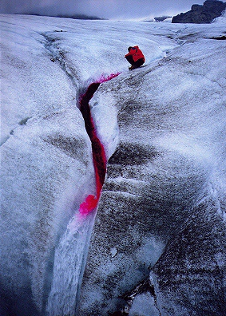

This page calculates the rate of dispirsion of a cloud of dye as it travels through a water system. 'Time one' is the time to reach half the peak value in minutes, 'time two' is the time for it to fall back to half the peak value after the peak has passed. The output includes the estimate of the peak time and the dispersion coefficient.
The coefficient is calculated by iteratively using times for the peak event between times one and two. This time is placed into the equations for dispersion, one of which has 'time one' as a constant, the other 'time two'. The true values of the coeff and estimated peak time will occur when the iterated peak time gives the same value for the coeff in both equations.
This is highly unlikely to occur, so there is a tolerance function, which is the amount the coeff is allowed to vary either side of one of the equation's values before it is equal to the other's value. Essentially this sets the decimal places to which the coeff is accurate.
The spacing of the time iterations will also effect the values. There are two calculating options.
The other checkbox allows you to examine the dispersion coeffs as they are being calculated. This is just so you can check the system is doing something rather than hanging. Be warned that this option massively increases the time for the calculations and you may need to occasionally clear the java console as it fills up and hangs on some browsers.
I'd also recommend you run this page in a new browser window which you can kill if the page hangs. That way you shouldn't have to restart your browser.
If you want a copy of the source code, this page, and the java classes so you can run this off line, here's a zip file with them in. If you want further information, email Andy Evans on geoaje@leeds.ac.uk. If you improve the code, let me know and I'll update it!